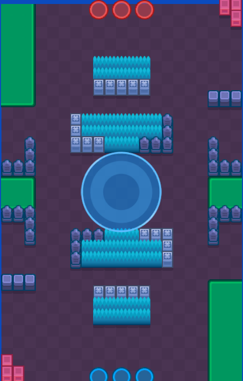
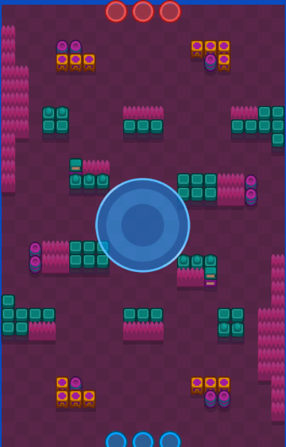
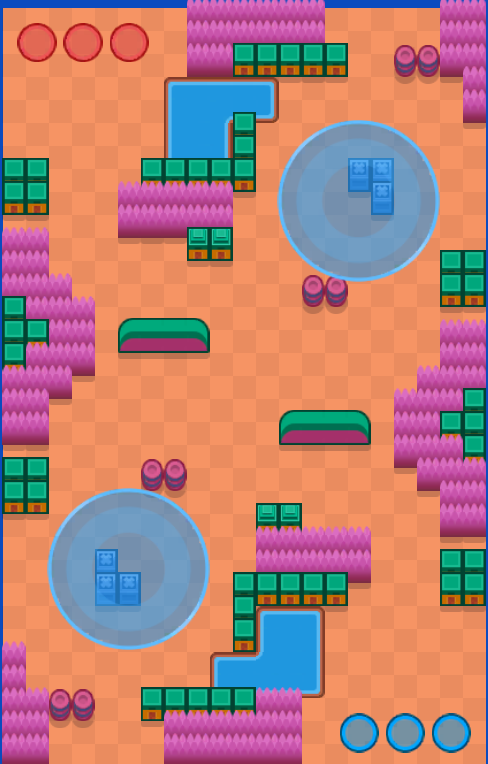
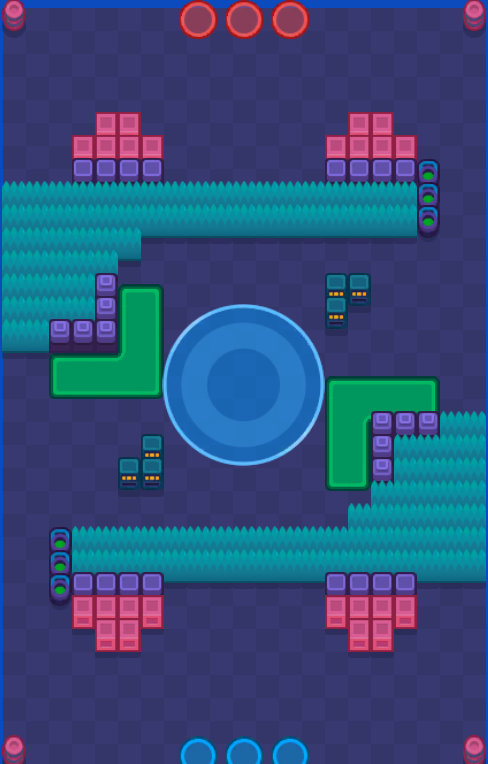

マップ別攻略
ホットゾーン
各マップに合った戦術とおすすめキャラを紹介！
ビートルバトル

🗺特徴：
ミッドとサイドが特に範囲が広いマップ
⭐おすすめキャラ：
- ビー
- ペニー
- オーリー
- エリザベス
- ハンク
- サンディー
🎯戦術のポイント：
- サンディーなどの中距離キャラもしくは範囲攻撃キャラがおすすめ
- マップの両端が一直線になっているため遠距離で狙うのがおすすめ
オープンビジネス

🗺特徴：
斜めに射線が通りやすくなっているのが特徴。
⭐おすすめキャラ：
- ガス
- ラリー&ローリー
- ジェシー
- ジュジュ
- ペニー
- ストゥー
🎯戦術のポイント：
- オブジェクトを利用しつつエリア内に圧力をかける
- 両サイドからも圧力をかける
パラレルワールド

⭐ おすすめキャラ
- R-T
- メロディー
- オーリー
- ジュジュ
- ストゥー
- ラリー&ローリー
🎯 戦術のポイント
- エリアが2つあるマップなのでエリアを長時間踏めるキャラが強い
- エリアの中にあるブロックをうまく利用する
炎のリング

🎯 戦術のポイント
- ブッシュを活かして敵陣に奇襲をかける
- 凸ってきた場合あまり下がらず全員で処理するのがおすすめ